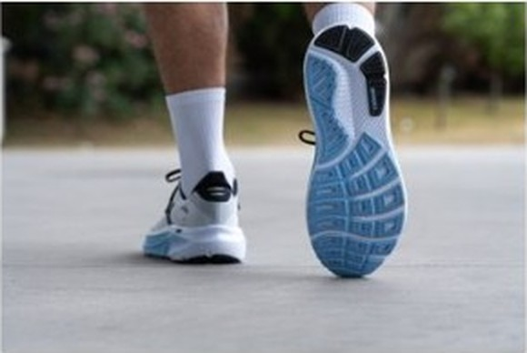
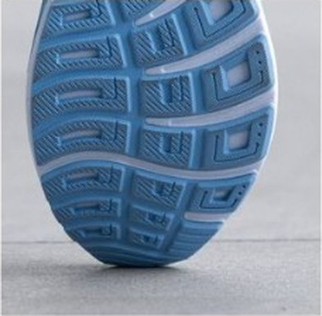

DAILY｜デイリートレーナー
退屈さが、そのまま性能。
面白い靴ではない。海外メディアにも「刺激に欠ける」と書かれた。それでも、安定して、丈夫で、足を選ばない。故障せずに走り続けることが最優先の人にとって、ゴースト 18の退屈さはそのまま性能である。
キロ5:00〜6:30のジョグ中心。走り始めたばかり、または故障明け。甲高、幅広、外反母趾。
スピード練習も1足で済ませたい人。弾む走り心地を求める人。


デイリートレーナーがドロップ8mm・スタック40mm前後へ移る中、10mm／36mmを維持している。比較したデイリー3足で最も薄く、最も重い。変えたのは主にアッパーとインソール（OrthoLite X-60）で、キープコンセプトの更新だ。
エネルギーリターンは踏んだ力が返ってくる割合。エンドルフィン プロ5の72.8〜75.8%と比べるのは酷だが、はっきり低い。その代わりフォームが深く沈まず、接地面もフラットなので足首が倒れにくい。返りの少なさと安定は、同じ設計の表と裏だ。
バーの左端がキロ4:00、右端がキロ7:00。
ラボ計測のある4足のみ。高いほど滑りにくい。
寿命データのある6足で試算した概算。シエロとアディオスは350km、プロ5は500km、デイリーは想定寿命の中間値（ライダーは800km）で計算。
| ゴースト 18 | ノヴァブラスト 6 | ウエーブライダー 30 | |
|---|---|---|---|
| 価格 | ¥19,800 | ¥17,600 | ¥18,700 |
| 重量 | 290g（27.0cm） | 約253g（US9） | 約265g（27.0cm） |
| 接地安定感 | 極めて高い | 中〜高 | 高 |
| グリップ | 0.57 | 0.76 | データなし |
| 幅の選択肢 | スリム〜4Eの4段階 | 標準で広め | 前作比で容積増 |
3足で最も高く、最も重い。スペック表だけなら勝ち目は薄い。それでも選ぶ理由は、接地の安定と幅の選択肢だ。足に合う靴がなかなか見つからない人には、4段階の幅展開がそのまま決定打になる。雨の日が多いならグリップの差は意識しておくこと。
海外レビューでは、ブレや倒れ込みが起きない「自然な安定性」が高く評価されている。一方でThe Run Testersなどからは「安心感はあるが、弾む楽しさに欠ける」と冷静な指摘もある。キロ4:30を切ると300g前後の重さがそのまま脚への負担になる。この靴で速く走ろうとしないことだ。
フィットは慣らし不要の包み込むタイプ。強固なヒールカップと厚手のタンで、長く履いてもトラブルが少ない。
耐久性が飛び抜けている。厚さ3mm以上のRoadTackラバーが全面を覆い、約640〜800km以上走れる。1kmあたり約28円（¥19,800÷720km）。週に30km走る人なら半年は持つ計算だ。
走り始めた人や、週末だけ長く走る人に合う。立ち仕事やウォーキングでも快適との評価があるので、平日に通勤で履いて歩くような使い方もしやすい。2足目を買うなら、スピード担当にノヴァブラスト 6を足す。
速くならない。楽しくもない。ただし壊れにくく、足を壊しにくい。この価値を理解して買うなら、ゴースト 18は高くない買い物になる。
※本記事はメーカー公表値、海外ラボの計測データ、国内外のレビューをもとにした分析です。1kmあたりの費用は想定寿命からの概算です。